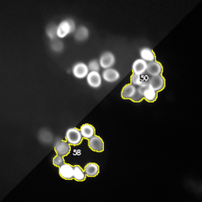

To get started, you can take a look at some example pipelines and other kind of examples:

Segmenting spores
This example applies auto-thresholding to segment spores from microscopy images.
It makes use of the particle analyzer to extract ROI and measurements and shows how to create an area histogram plot.
There are both offline and online versions available. The online version downloads all necessary images from GitHub on executing the pipeline.
This example is based on one of the tutorials.
This example applies auto-thresholding and morphological operations to segment glomeruli in 2D slices of whole murine kidney light sheet microscopy images. This algorithm is part
of a 3D segmentation published by Klingberg et al. There are both offline and online versions available. The online version downloads all necessary images from GitHub on executing the pipeline.
This example segments worms. This algorithm is part
of a 3D segmentation published by Klingberg et al. There are both offline and online versions available. The online version downloads all necessary images from GitHub on executing the pipeline.
A useful node that creates a montage of each incoming image stack and creates a montage of the montages. It is very useful when trying out different parameters for 3D analyses.
Just copy the node from this website and paste it into your JIPipe pipeline.